Ghana, seen
from the journey
A collection of places, people, food, heritage, and landscapes from tours across Ghana.
Greater Accra Region
Capital landmarks, markets, public art, and stories of Ghana's independence.
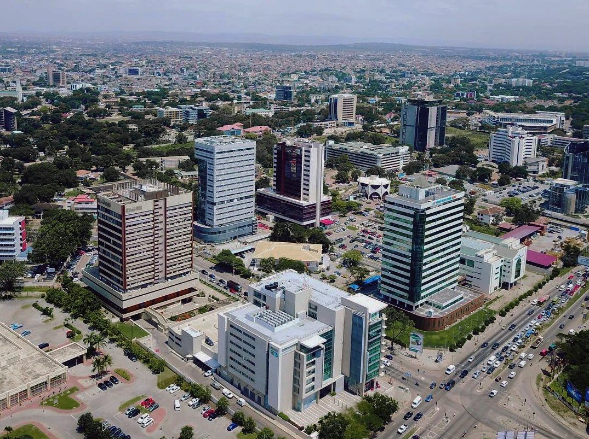
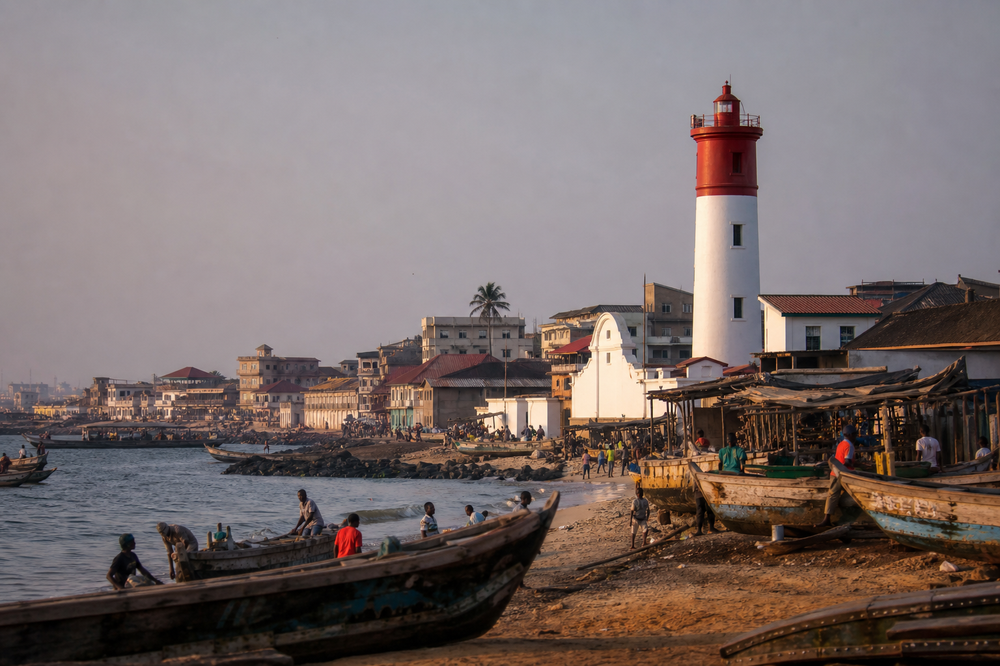
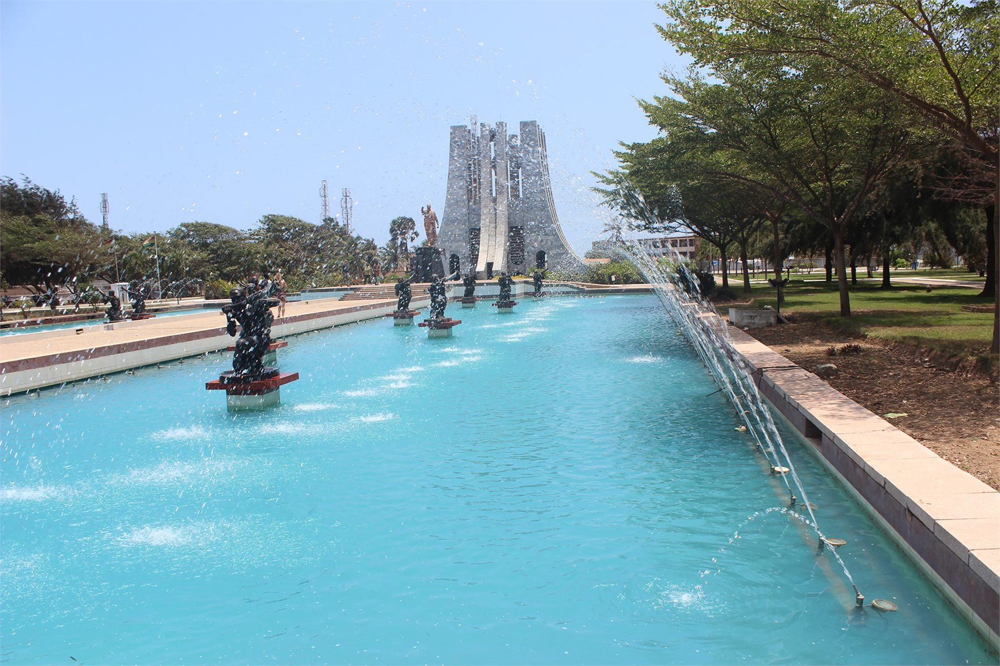
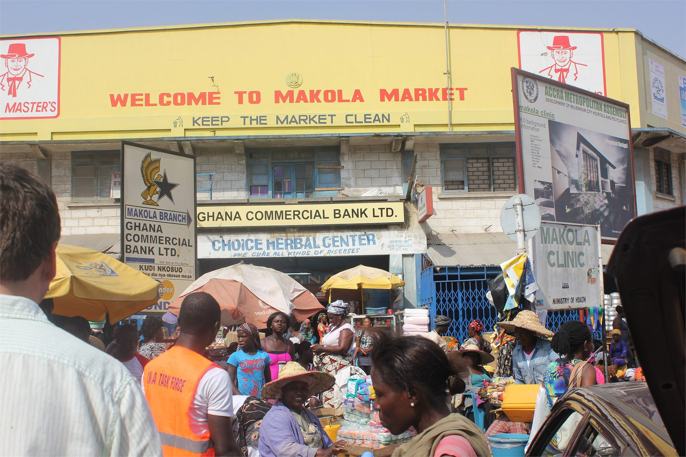
Central Region
Coastal heritage, rainforest canopy walks, local food, and powerful return journeys.
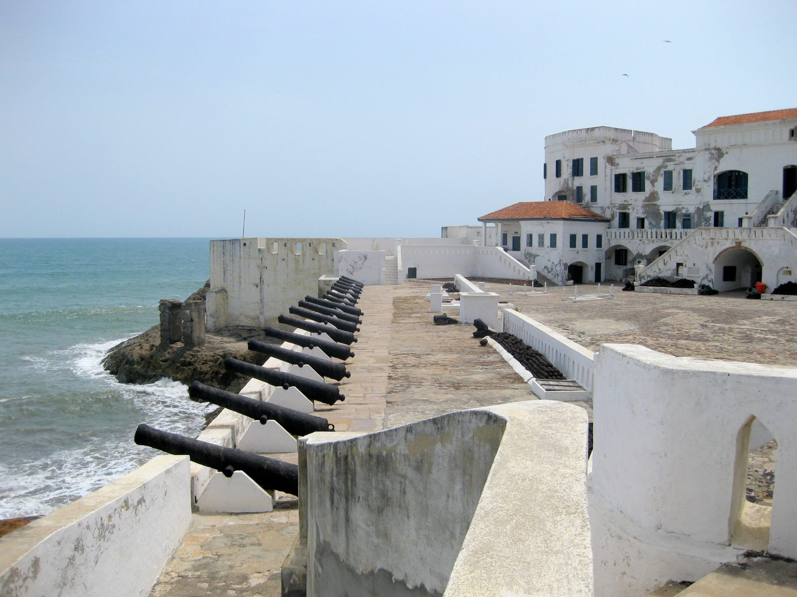
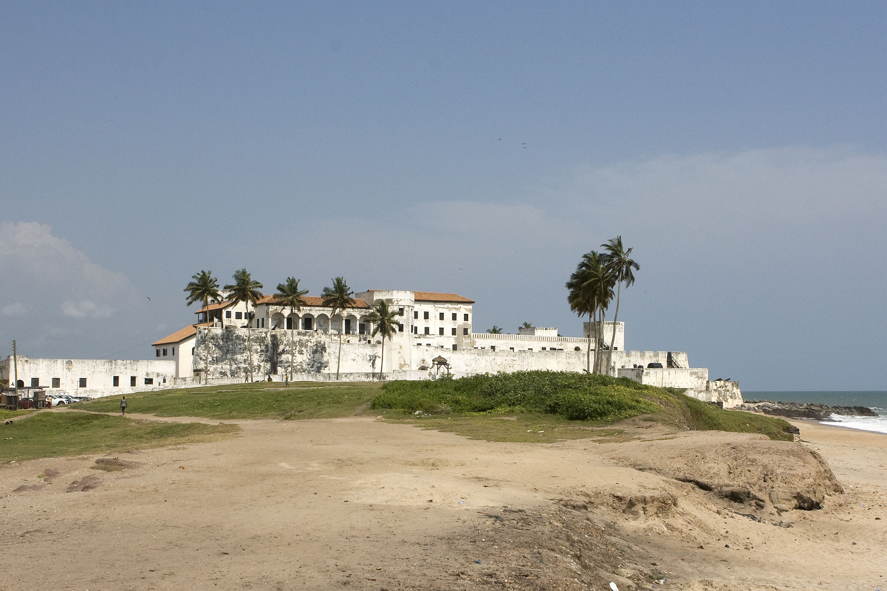
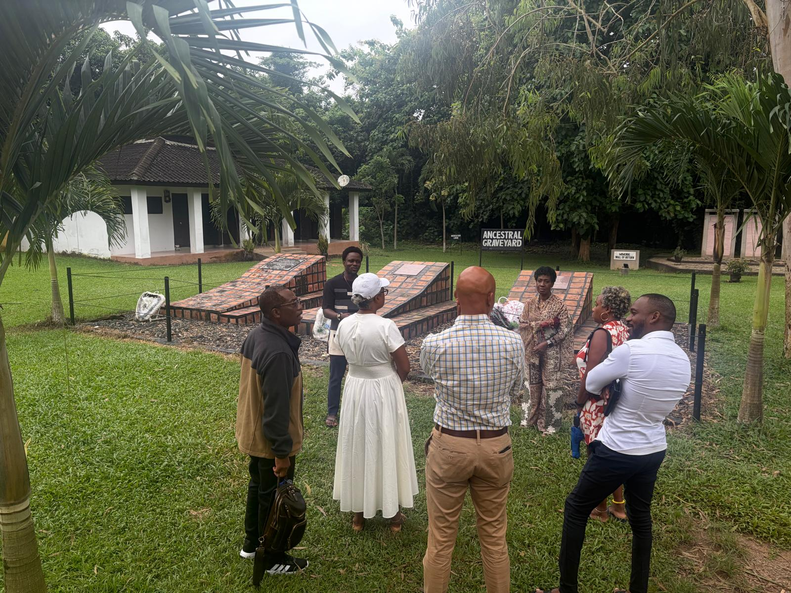
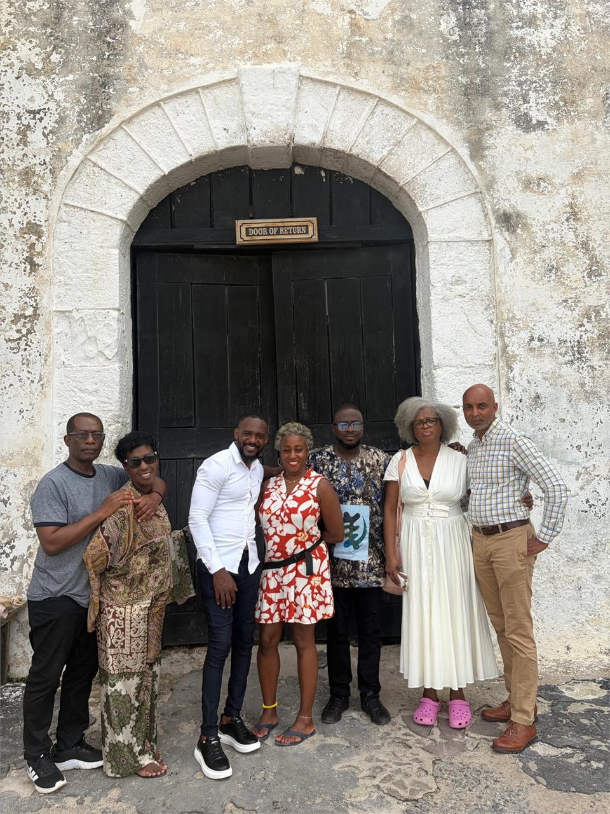
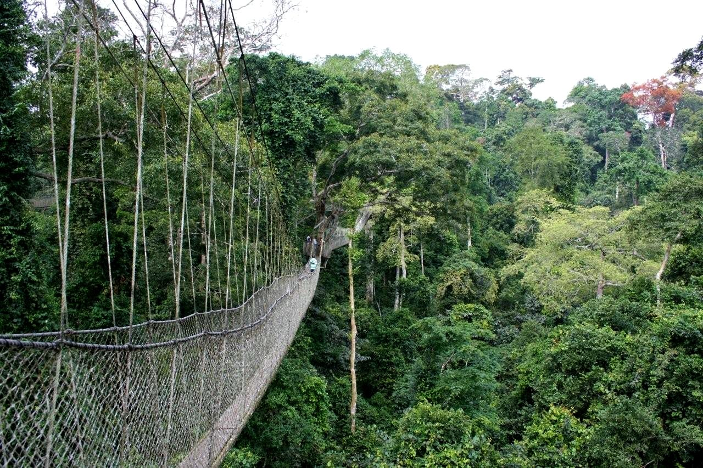
Volta Region
Waterfalls, mountain views, and unhurried journeys through the highlands.
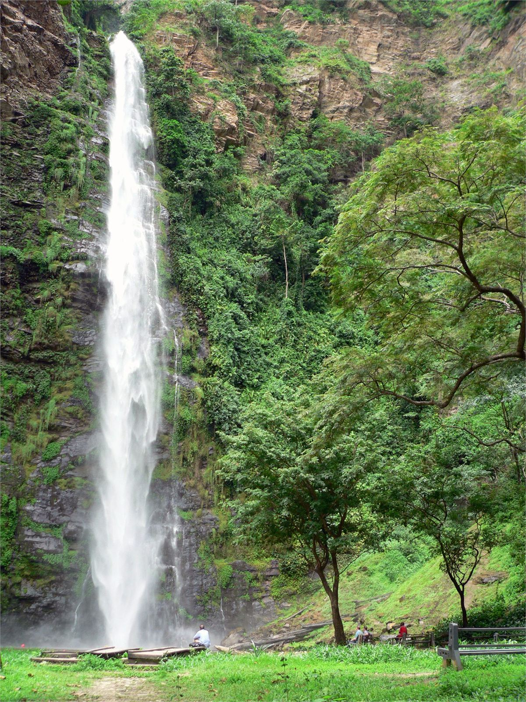

Eastern Region
Lake escapes, mountain scenery, and quiet moments beside the Volta.
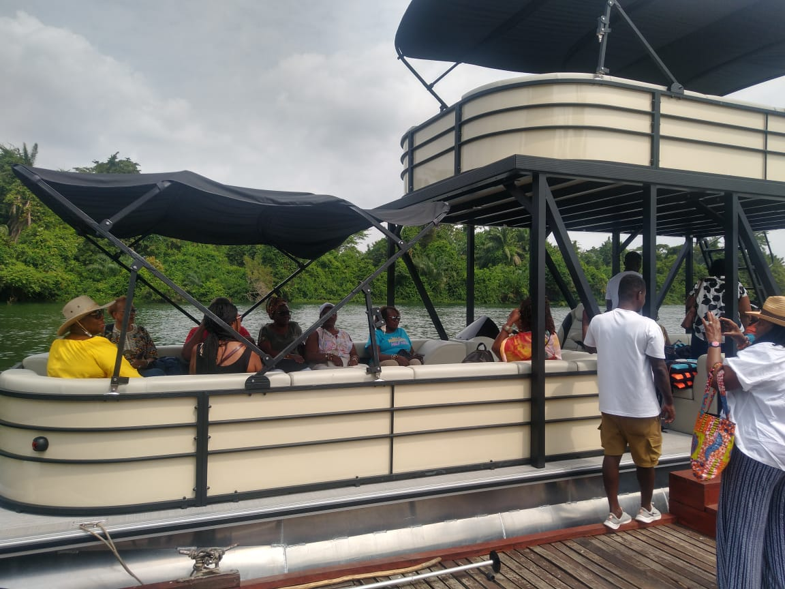
Ashanti Region
Markets, craft, symbolism, and creative traditions shared across the region.
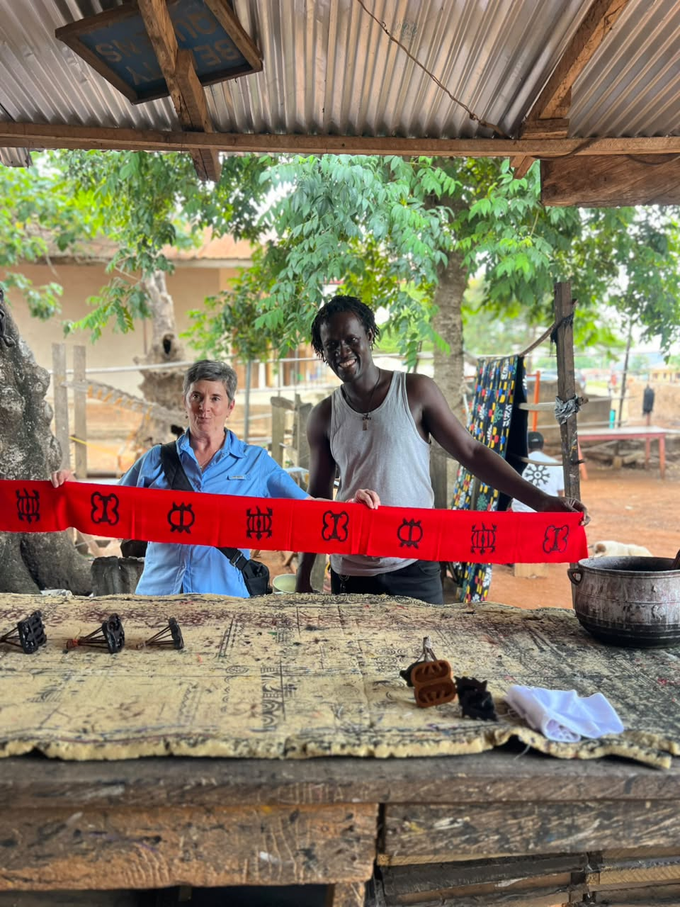
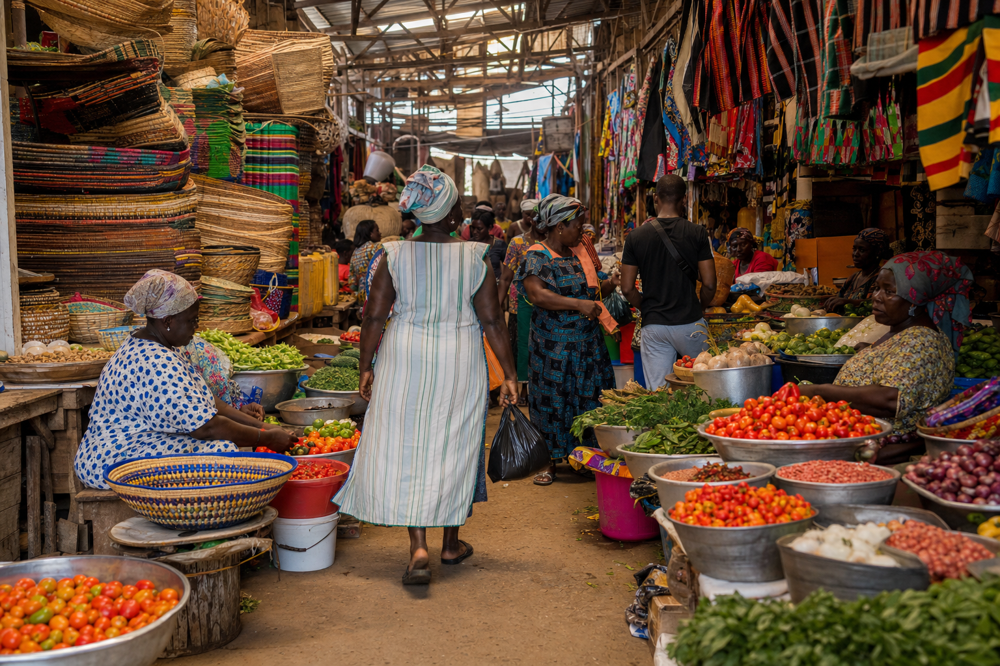
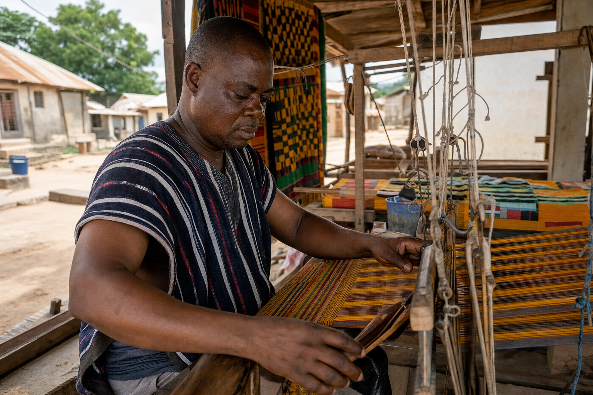
Northern Region
Wildlife, ancient architecture, and the open landscapes of the north.
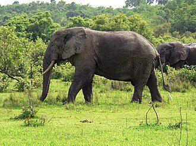
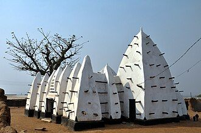
Ready to experience these places for yourself?
Let our local team shape a Ghana journey around the places and stories that stay with you.